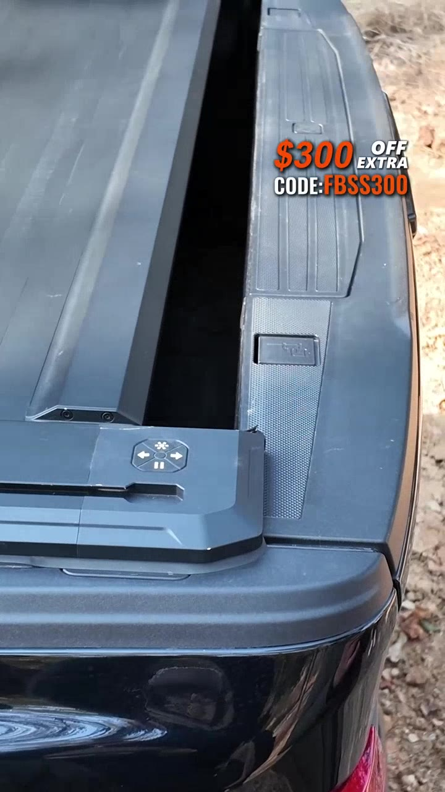

NORTH AMERICA / PERFORMANCE CREATIVE
从产品卖点，走到车主生活。
面对高客单汽车产品，核心问题不是“功能讲得够不够多”，而是如何让北美车主快速看懂它与真实使用场景的关系。
从文化信号与商业问题出发，形成创意路线、组织生产、上线验证，再将有效方法沉淀为可复制的内容系统。
面对高客单汽车产品，核心问题不是“功能讲得够不够多”，而是如何让北美车主快速看懂它与真实使用场景的关系。

沟通协作不是“开更多会”，而是把模糊需求转化成清晰决策，让投放、拍摄和剪辑知道：为什么做、先做什么、什么必须改变。
已验证方向需要快速扩量，但原始素材和制作资源有限；如果只做机械换字幕、换车型，内容会迅速同质化。
希望快速补量、承接窗口期，并尽可能延长已验证方向的生命周期。
排期已满，现有镜头有限；继续加工会出现画面重复和表达疲劳。
需要在速度、质量和创意差异之间做优先级判断，并让方案可执行。
明确市场、人群、业务目标、已验证变量、待测试变量和交付优先级。
区分低成本扩量、局部补拍和全新创意路线，避免所有需求都进入同一制作方式。
新人群、新场景需要生产；Hook、字幕、CTA和局部镜头则进入模块化复用。
记录放大、改写和淘汰的方向，形成拍摄补充清单与下一轮创意优先级。
“这条看起来太像广告，不够北美。”
删除前3秒品牌露出，改用车主打开车门发现泥水的第一视角；口播从产品介绍改成真实问题表达。
覆盖效果广告、UGC、产品演示、品牌化内容与AI叙事。点击卡片可直接播放，查看市场、形式与我的具体职责。
我希望继续做真正理解海外用户、同时能被团队稳定执行的内容。无论是内容策略、创意方向还是AI生产体系，都欢迎交流。